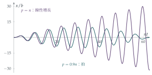

STEP II 1991，第 12 題
繼續之前，請先閱讀題目（原題為英文）。題目載於 STEP Support Programme 的題目資料庫： step.maths.org/questions/91-s2-q12
引子
推鞦韆上的小孩時，只要每一下都推在恰當的時刻，輕輕的推力也會累積成大幅的擺動；節奏不對的話，就幾乎毫無效果。每個振動系統都有其固有頻率（natural frequency），以這個頻率去驅動它，所得的反應會大得與所花的力氣完全不成比例。這就是共振（resonance）。歌手能夠震碎酒杯，士兵過橋時要打亂步伐，收音機能夠從數以千計的電台中選出其中一個，都是這個緣故。
這道題目搖動一條彈性繩的頂端，問繩子在甚麼情況下會保持拉緊。答案含有因子 \(\frac{1}{n - p}\)，當驅動頻率 \(p\) 趨近固有頻率 \(n\) 時，這個因子會趨於無窮大：在接近共振時，輕輕一搖已足以令繩子鬆弛。
動筆之前
質點懸掛在平衡位置，繩的伸長量（extension）為 \(c\)。若繩的彈性模量（modulus）為 \(\lambda\)，則 \(\lambda\)、\(a\)、\(c\)、\(m\) 與 \(g\) 之間有甚麼關係？當頂端向下移動了 \(b\sin pt\)，而質點向下移動了 \(x\) 時，伸長量是多少？
在平衡狀態下，張力（tension）等於重量：\(\frac{\lambda c}{a} = mg\)。當頂端向下位移 \(b\sin pt\)，而質點向下位移 \(x\) 時，繩的長度增加了 \(x - b\sin pt\)，所以伸長量是 \(c + x - b\sin pt\)。
逐步解題
階段 1 運動方程
取向下為正，作用於質點的力有它的重量 \(mg\)，以及向上的張力 \(\frac{\lambda}{a}(c + x - b\sin pt)\)： \[m\ddot x = mg - \frac{\lambda}{a}(c + x - b\sin pt) = -\frac{\lambda}{a}(x - b\sin pt),\] 這裏用了 \(\frac{\lambda c}{a} = mg\)。由於 \(\frac{\lambda}{ma} = \frac{g}{c} = n^2\)，上式即 \(\ddot x = -n^2(x - b\sin pt)\)。■
質點受到一個彈簧力，把它拉向移動中的點 \(b\sin pt\)。假如沒有驅動，它會以角頻率（angular frequency）\(n\) 振動，這就是它的固有頻率。
階段 2 求解
方程是 \(\ddot x + n^2x = n^2b\sin pt\)。試用 \(x = C\sin pt\) 這種形式的特解（particular solution），然後加上 \(\ddot x + n^2x = 0\) 的通解（general solution）。質點滿足哪些初始條件？
代入 \(x = C\sin pt\) 得 \((-p^2 + n^2)C = n^2b\)，所以 \(C = \frac{n^2b}{n^2 - p^2}\)（這裏需要 \(p \neq n\)）。餘函數（complementary function）是 \(D\cos nt + E\sin nt\)。質點由平衡位置從靜止開始運動：\(x(0) = 0\) 令 \(D = 0\)，而 \(\dot x(0) = 0\) 給出 \(Cp + En = 0\)，所以 \(E = -\frac{nbp}{n^2 - p^2}\)。綜合起來， \[x(t) = \frac{bn}{n^2 - p^2}(n\sin pt - p\sin nt). \qed\]
階段 3 保持拉緊
繩子拉緊，當且僅當它的伸長量為正。試把伸長量 \(c + x - b\sin pt\) 以 \(t\) 表示。
從 \(x(t)\) 減去 \(b\sin pt\)， \[\begin{aligned} x - b\sin pt &= \frac{b}{n^2 - p^2}\bigl(n^2\sin pt - np\sin nt - (n^2 - p^2)\sin pt\bigr) \\ &= \frac{bp}{n^2 - p^2}(p\sin pt - n\sin nt). \end{aligned}\] 所以繩子自始至終保持拉緊，當且僅當 \[c + \frac{bp}{n^2 - p^2}(p\sin pt - n\sin nt) \geq 0 \qquad\text{對所有 } t \geq 0.\]
\(p\sin pt - n\sin nt\) 最小可以負到甚麼程度？
由於 \(|\sin| \leq 1\)，我們有 \(p\sin pt - n\sin nt \geq -(p + n)\)。所以伸長量至少是 \[c - \frac{bp(n + p)}{n^2 - p^2} = c - \frac{bp}{n - p},\] 當 \(pb < (n - p)c\) 時，這個值為正。■
當 \(p\) 趨近 \(n\) 時，這個條件會變成怎樣？當 \(p = 0.9n\) 時，搖動的振幅（amplitude）\(b\) 要有多小？當 \(p = 0.99n\) 時又如何？
回顧
由平衡位置量起。利用平衡時的伸長量 \(c\)，重力便從方程中消去了。
特解加餘函數。頻率為 \(p\) 的受迫響應，加上頻率為 \(n\) 的自由振動，其中的常數由初始條件決定。
估界，不必求解。我們沒有準確求出伸長量的最小值；對正弦作一個粗略的估界，已足以得出一個充分條件（sufficient condition）。
背後的數學
共振極限
在解中令 \(p \to n\)。分子和分母都趨於零，計算極限（或使用洛必達法則（l’Hôpital’s rule），對 \(p\) 求導）可得 \[x(t) \to \frac{b}{2}(\sin nt - nt\cos nt).\] \(nt\cos nt\) 這一項會無止境地增大：恰好以固有頻率驅動時，振幅隨時間線性增長，每一下推動都與運動同步，為它再添一分。在略低於共振的頻率下，兩個頻率時而同步、時而錯開，產生拍（beats）：振幅以緩慢的頻率 \(n - p\) 時漲時落（圖 11.1.1）。兩條結他弦的音高幾乎調準時，聽到的也是同樣的拍。

阻尼與共振曲線
現實中的系統會因摩擦或空氣阻力而損失能量，這就限制了振幅的增長。有阻尼（damping）時，系統對頻率為 \(p\) 的驅動力的穩態響應，其振幅在固有頻率附近達到峯值；峯愈尖銳，阻尼就愈小。工程師用品質因數（quality factor）\(Q\) 來描述這一點：粗略地說，它是系統在失去大部分能量之前所完成的振動次數。酒杯的 \(Q\) 數以千計，所以一個恰好等於其固有頻率的持續音可以把它震碎。汽車的懸掛系統則刻意設計成 \(Q\) 值很低，以免路面顛簸令車身彈跳不止。
1831 年，一隊士兵以整齊步伐操過曼徹斯特附近的布勞頓吊橋（Broughton Suspension Bridge），令橋身振動，最終倒塌；自此以後，軍隊過橋時都奉命打亂步伐。倫敦千禧橋（London Millennium Bridge）於 2000 年 6 月啟用，人羣一踏上橋，橋身便開始左右搖擺：行人不自覺地調整步伐去配合搖擺，同步地為它注入能量，結果該橋關閉了兩年，以便加裝阻尼器。1940 年塔科馬海峽吊橋（Tacoma Narrows Bridge）那次著名的倒塌，常被說成是共振，但其實是另一種現象，即氣動彈性顫振（aeroelastic flutter），當中風所施的力取決於橋本身的運動。要分析它，需要用到自激振動（self-excited oscillation）和極限環（limit cycle）的概念（第 8.4 節）。
思維技巧
對於受周期力驅動的線性方程，其解是驅動頻率下的響應，加上固有頻率下的自由振動，後者按初始條件選定。
這個方法之所以可行，全靠線性（linearity）：解可以相加。在大學裏，同一原理應用於多個驅動頻率之和，便引出傅立葉分析（Fourier analysis）、工程學中的傳遞函數（transfer function），以及物理學中的格林函數（Green’s function）。
延伸練習
下墜的升降機。試做 STEP II 1996，第 11 題：升降機內有一個質量繫於彈性繩上，升降機先開始加速，其後停止加速。留意最終的振幅如何取決於加速持續的時間。
共振之時。試用特解 \(x = Ct\cos nt\)，直接解 \(\ddot x + n^2x = n^2b\sin nt\)，其中 \(x(0) = \dot x(0) = 0\)。驗證所得結果與上文的極限一致。
拍。證明 \(n\sin pt - p\sin nt\) 可寫成兩項之和，而當 \(p\) 接近 \(n\) 時，其中一項近似於 \(2n\cos\frac{(n+p)t}{2}\sin\frac{(p-n)t}{2}\)。由此解釋拍的周期為何是 \(\frac{2\pi}{n - p}\)。
有阻尼的共振。對於 \(\ddot x + 2k\dot x + n^2x = F\cos pt\)，其中 \(k > 0\) 且很小，求穩態振幅，並證明當 \(p^2 = n^2 - 2k^2\) 時振幅最大。
延伸閱讀
A. P. French, Vibrations and Waves（MIT Introductory Physics Series）。第 4 章講述受迫振動與共振，是這個課題的經典論述。
Steven Strogatz, Sync（Penguin）。講述事物如何趨於同步，從螢火蟲談到千禧橋。
Henry Petroski, To Engineer Is Human（Vintage）。講述工程上的失敗個案，包括歷史專欄中提到的幾座橋。